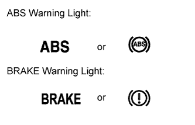

ANTI-LOCK BRAKE SYSTEM > DIAGNOSIS SYSTEM |
| DIAGNOSIS |
 |
If the skid control ECU detects a malfunction, the ABS/BRAKE warning lights will come on to warn the driver.
The table below indicates which lights will come on when there is a malfunction in a particular function.
| Item/Trouble Area | Multi-terrain ABS | BA | EBD |
| ABS Warning Light | ○ | ○ | ○ |
| BRAKE Warning Light | - | - | ○ |
| WARNING LIGHT CHECK |
Release the parking brake lever.
When the engine switch is turned on (IG), check that the ABS and BRAKE warning lights turn on and then turn off after the engine starts.
If a light remains on, proceed to troubleshooting for the light circuit below.
| Trouble Area | See Procedure |
| ABS warning light circuit |
Click here
|
| BRAKE warning light circuit |
Click here
|